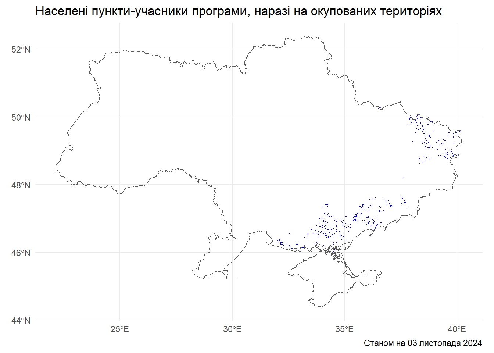

t1_24q2_accum |> count(fixed_internet_type) |> arrange(desc(n)) |>
gt() |> grand_summary_rows(2, fns = ~ sum(.))| fixed_internet_type | n | |
|---|---|---|
| є xPON | 15440 | |
| немає фікс.інтернет | 7634 | |
| є інші технології | 1940 | |
| є FTTX, без xPON | 833 | |
| sum | — | 25847 |
У червні 2021 року Уряд затвердив виділення 500 млн грн на субвенцію для підключення закладів соціальної інфраструктури (шкіл, бібліотек, медичних закладів, ЦНАПів тощо) до широкосмугового Інтернет. Програма передбачала, що 670 громад та 3652 населених пунктів (здебільшого, сіл та селищ) зможуть отримати послуги з підключення до оптичного Інтернет.
Заявки на участь у програмі подали 4103 населені пункти. Фактично підключення послуги («відповідно до протоколу») відбулося для 2805 населених пунктів. Непрямим впливом програми передбачалося також, що ще кілька сотень населених пунктів, розташованих на шляху до відібраних населених пунктів, також будуть підключені залученими постачальниками інтернет-послуг (переможцями тендерів).
Для оцінки ефективності цієї програми була проаналізована регуляторна звітність постачальників електронних послуг за формою 1-Т «Сфера телекомунікацій»: чи з’явився оптичний інтернет, тобто технології xPON або FTTx, у населених пунктах, ідентифікованих як учасників програми. До останніх віднесено 2805 населених пунктів, «підключених відповідно до протоколу», 334 «підключених транзитом» та 98 «підключених підключених під час тендерної процедури без закупівлі» — разом 3237 населених пунктів.
Для оцінки впливу програми також були використані такі набори даних:
Під час дії воєнного стану постачальники електронних послуг не зобов’язані подавати звітність регулятору. Відповідно, для оцінки підключених населених пунктів на основі регуляторної звітності були використані звіти за період 2021-2024Q2: якщо принаймні в одному періоді звітування населений пункт мав абонентів підключених до широкосмугового Інтернет, він вважається підключеним. При такому підході, у розрізі технологій, підключення підконтрольних населених пунктів станом на 2024Q2 виглядає так:
t1_24q2_accum |> count(fixed_internet_type) |> arrange(desc(n)) |>
gt() |> grand_summary_rows(2, fns = ~ sum(.))| fixed_internet_type | n | |
|---|---|---|
| є xPON | 15440 | |
| немає фікс.інтернет | 7634 | |
| є інші технології | 1940 | |
| є FTTX, без xPON | 833 | |
| sum | — | 25847 |
В розрізі населених пунктів-учасників програми, підключених до оптичного інтернету і які знаходяться на підконтрольній території, маємо таку динаміку за роками (тут також населений пункт вважається підключеним, якщо принаймні в один період звітування 2021-2024Q2 постачальники зазначали присутність абонентів, підключених за технологіями FTTx/xPON):
| оптич_інтернет 2021 | оптич_інтернет 2022 | оптич_інтернет 2023 | оптич_інтернет 2024Q2 |
|---|---|---|---|
| 907 | 1677 | 2128 | 2233 |
Таким чином, відповідно до регуляторної звітності, станом на 2024Q2, 2233 населених пункти, які перебувають на підконтрольних територіях отримали послугу підключення до оптичного інтернету. Для порівняння, зібрана у 2023 році звітність від ОМС показує підключення 7279 соціальних закладів у 2805 населених пунктах (2538 без врахування тимчасово окупованих територій).
Інші 337 з 3237 населених пункти перебувають на окупованих територіях:

Отже, з 3237 населених пунктів, ідентифікованих як учасників програми, станом на 2024Q2 регуляторна звітність показує наявність оптичного інтернету у 2233 населених пунктах — тоді як звітність ОМС, станом на лютий 2023, дає 2538 населені пункти. Ще 337 перебувають на тимчасово окупованих територіях.
Щодо решти 667 населених пунктів на підконтрольній території, які брали участь в програмі, але, відповідно до регуляторної звітності, не мають підключення до фіксованого Інтернет, проведено додатковий аналіз: підключення цих населених пунктів оцінено завдяки співставленню переможців тендерів на постачання послуг з підключення до оптичного Інтернет (зі звітності ОМС) зі списком постачальників електронних послуг, що не подають регуляторну звітність: базовим припущенням є те, що у населеному пункті, де є постачальник-переможець тендеру, але при цьому цей постачальник не подає звітність через воєнний стан — у такому населеному пункті фіксований Інтернет скоріше підключений.
edrpou_to_check <-
soczakl_subv |>
mutate(edrpou_provider = as.character(edrpou_provider)) |>
distinct(edrpou_provider) |>
left_join(t1,
join_by(edrpou_provider == edrpou)) |>
filter(is.na(firm_name)) |>
select(edrpou_provider) |>
as_vector() |> unname()
t1 |> filter(edrpou %in% edrpou_to_check) |> nrow() # немає 22 провайдерів у 1-Т, які вказані як переможці у звітності ОМС
soczakl_subv |> filter(edrpou_provider %in% edrpou_to_check) |>
distinct(geo_katottg4) |> nrow() # на цих 22 провайдери припадає 240 нп у звітності ОМС
np240_vector <- soczakl_subv |> filter(edrpou_provider %in% edrpou_to_check) |>
distinct(geo_katottg4) |> as_vector() |> unname() #це технічний рядок (вектор з 240 нп)
subv_results_aux |>
filter(subs_fttx_xpon_2024Q2 !=0) |> # це 2233 нп, які по 1-Т мають фікс.інтернет на 2024Q2
filter(geo_katottg4 %in% np240_vector) |> nrow() # 80 населених пунктів з 240 є в 1-Т з оптичним інтернетом (від інших провайдерів)Цей додатковий аналіз показав, що 22 провайдери, вказані як переможці тендерів у звітності від ОМС, не подавали регуляторну звітність у період 2021-2024Q2. На них припадає 240 підключених населених пунктів, відповідно до звітності від ОМС. В той же час, у 80 з цих 240 населених пунктів є оптичний інтернет, підключений іншими провайдерами (згідно з формою 1-Т). Таким чином, керуючись озвученим вище припущенням, до 2233 населених пунктів з 1-Т можемо додати 160 населених пунктів, ідентифікованих через звітність ОМС. Всього виходить 2393 населені пункти з оптичним інтернетом і 337 — на окупованих територіях. Разом — 2730.
Можливий ще один підхід до оцінки кількості населених пунктів охоплених оптичним інтернетом після старту програми субвенції — за принципом “об’єднання множин”: тоді підключеними до послуги вважаються усі населені пункти, які зазначені або в регуляторній звітності, або у звітності ОМС. За такого підходу у 2802 населених пунктах є оптичний інтернет; разом з 337 населеними пунктами на окупованих територіях виходить 3139. Будемо вважати це верхньою межею оцінки.
З цих 2802, у 2032 населених пунктах, або 72.6% випадків, у період 2021-2024Q2 діяли більше одного провайдера. Втім, з огляду на згадану неповноту даних у 1-Т, тут рахується, що конкретний провайдер є у населеному пункті, якщо хоча б в один з періодів за цей час він мав там абонентів; тому безпосередньо на 2024Q2 цей показник буде меншим через ринкову динаміку і вплив війни.
Оцінка кількості абонентів у підключених завдяки субвенції населених пунктах також заснована на формі 1-Т. З огляду на неповноту даних у звітності, викоростано такий підхід: якщо у звітності за попередній період зазначено присутність абонентів за визначеними технологіями у конкретному населеному пунктів, а у наступних — ні, то кількість абонентів перенесена з попереднього періоду у поточний/ наступні. Такий підхід не дозволяє точно оцінити кількіть абонентів, але є кращим, ніж взагалі не враховувати абонентів, якщо вони були у населеному пункті у попередній період.
Оцінка кількості абонентів нижче подана для 2233 населених пунктів, інформація про які є у формі 1-Т; абоненти з додаткових 160 населених пунктів, виокремлених зі звітності ОМС, тут не враховані. Це нижня межа оцінки кількості абонентів.
Кількість соціальних закладах порахована на основі набору МЦТУ з переліком соціальних закладів, актуальний станом на початок 2022 року.
| Субвенція 2021: нові населені пункти з xPON/FTTx | ||
|---|---|---|
| Очікувалось покриття населених пунктів, уся Україна: 3237 населених пунктів в окупації: 337 Соціальних закладів у НП з субвенцією: 8740 Фактично нових НП з xPon/FTTx за роками (лише підконтрольні): |
||
| Рік (на кінець періоду) | Села/Селища | Абоненти |
| 2021 | 907 | 138588 |
| 2022 | 1,677 | 141724 |
| 2023 | 2,128 | 167902 |
| 2024Q2 | 2,233 | 135543 |
|
- Ще 160 НП ідентифіковано як підключені через звітність ОМС - не входять у цю таблицю - Немає даних про підключення 507 НП/ їхніх абонентів |
||
Верхня межа оцінки кількості абонентів спирається на ширший підхід, коли до населених пунктів, підключених завдяки субвенції до оптичного інтернет, зараховуються усі, які зазначені або в регуляторній звітності за період 2021-2024Q2, або в звітності ОМС. За такого підходу кількість абонентів у 570 населених пунктах (отриманих як 2803, це всього населених пунктів за таким підходом, мінус 2233, що є в регуляторній звітності), можна оцінити за медіанним значенням абонентів, які вказані в населених пунктах-учасниках програми за даними 1-Т:
t1 |>
right_join(subv_results_aux, join_by(geo_katottg4)) |>
filter(!is.na(cnt_abn_xponfftx)) |>
summarize(median_n = median(cnt_abn_xponfftx),
average_n = round(mean(cnt_abn_xponfftx), 1)) |>
gt() |>
cols_label(
median_n = "медіанне",
average_n = "середнє")| медіанне | середнє |
|---|---|
| 4 | 37.2 |
Беручи медіанне значення у 4 абоненти на населений пункт (це більш консервативне, але доречніше, ніж середнє, припущення щодо кількості абонентів), маємо додаткових 2280 абонентів з 570 населених пунктів. Тоді на 2024Q2 маємо такі результати:
| Субвенція 2021: нові населені пункти з xPON/FTTx | ||
|---|---|---|
| Очікувалось покриття населених пунктів, уся Україна: 3237 населених пунктів в окупації: 337 Соціальних закладів у НП з субвенцією: 9120 Фактично нових НП з xPon/FTTx за роками (лише підконтрольні): |
||
| Рік (на кінець періоду) | Села/Селища | Абоненти |
| 2024Q2 | 2803 | 137823 |
| - Немає даних про підключення 97 НП/ їхніх абонентів | ||
Беручи ARPU (середній дохід з абонента), який, за даними регулятора, станом на 2024Q2 становив 230.5 грн з однієї лінії доступу (абонента), можемо оцінити додатковий дохід ринку згенерований абонентами підключених населених пунктів. Оскільки ARPU для постачальників-ФОП та постачальників-юридичних осіб практично не відрізняється (227 грн проти 252 грн), для простоти оцінки доходів лишимося із середнім для всіх значенням.
Відповідно, беручи нижню межу оцінки кількості абонентів, сукупний додатковий дохід ринку у 2024 році оцінюється на рівні 375 млн грн; беручи верхню межу — 381 млн грн.
Як показує таблиця з першого розділу, згідно з регуляторною звітністю, оптичний інтернет є у 16,273 населених пунктах з 25,847, які станом на 03 листопада 2024 року знаходяться на підконтрольних Україні територіях. На рівні територіальних громад це означає, що в Україні є 1052 громади, у яких принаймні один населений пункт лишається без оптичного інтернету.
У 9574 населених пунктах без оптичного Інтернет, за даними на початок 2022 року, знаходяться 2964 соціальних закладів.